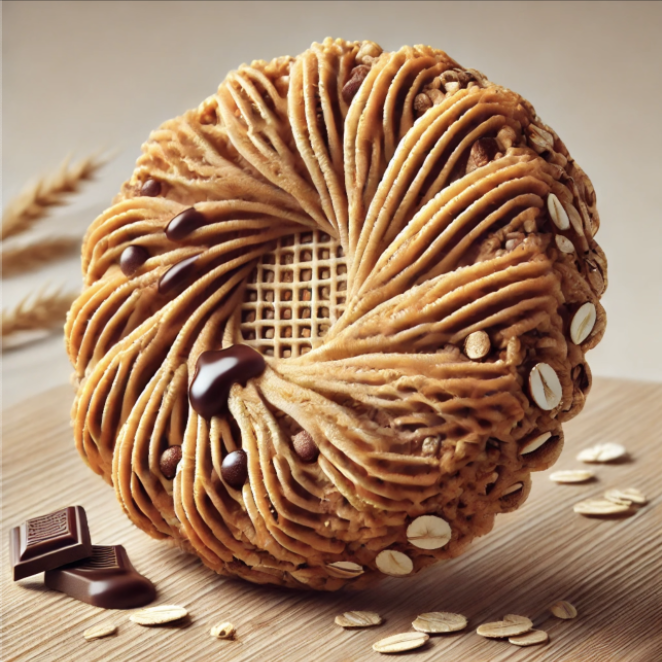
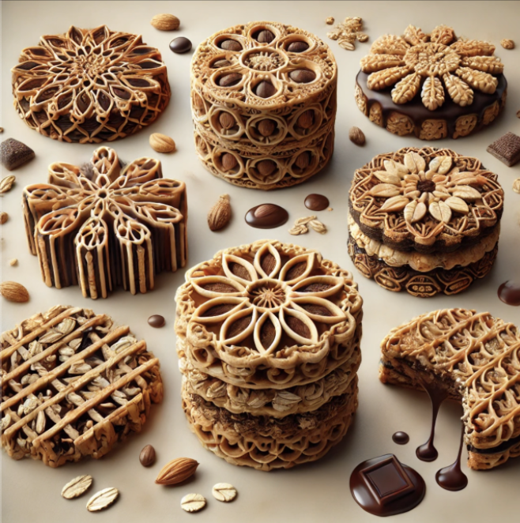

Instructions for Making the Healthy Cookie
Step 1: Print the Cookie Dough
• Select the dough material and ensure it is at 150°C–180°C.
• Choose the cookie design (e.g., spiral, lattice, or standard round).
• Print layer by layer, creating intricate or simple shapes.
Step 2: Add Toppings (Optional)
• Load toppings like nuts or chocolate drizzle into the printer.
• Print decorative patterns (e.g., a zigzag or swirl) on top of the cookie.
Step 3: Baking During Printing
• The printer’s bed will maintain a temperature of 40°C–60°C to lightly bake the cookie as it prints.
• If additional baking is required, place the printed cookie in an oven.
Step 4: Cooling
• Allow the printed cookie to cool on the printer bed or a separate cooling rack.
Step 5: Serve
• Decorate further if needed and serve when the cookie is fully set.